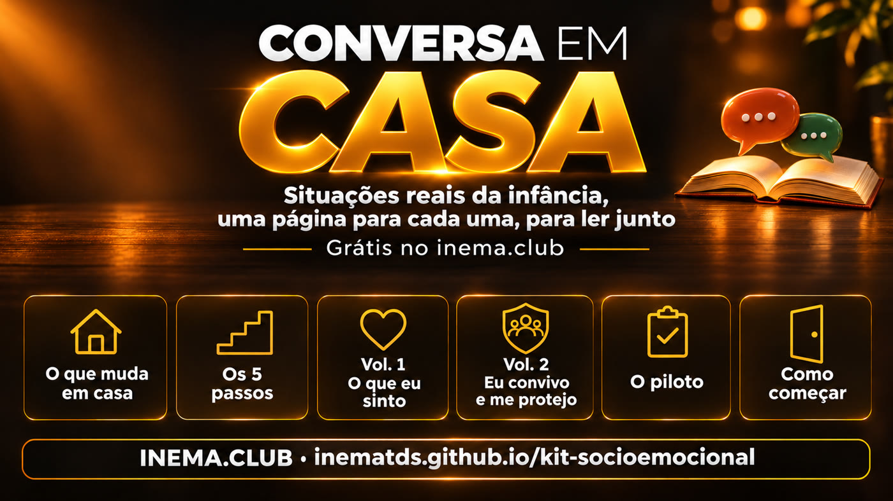

O Conversa em Casa é um kit grátis de páginas ilustradas para pais, professores e cuidadores lerem com crianças de 3 a 13 anos. Cada página mostra uma situação comum (raiva, um brinquedo que quebra, um colega que provoca) e o que a criança pode fazer, passo a passo, sem revidar e pedindo ajuda quando precisa. Não precisa saber ler: a criança acompanha pelos desenhos e você lê o texto. Hoje estão no ar o mapa com 128 situações em dois volumes e um piloto de 5 páginas para baixar e imprimir, em desenho ou em 3D.
O ganho
A conversa acontece antes da hora difícil
Quando a raiva chega ou o colega provoca, não dá tempo de ensinar. Dá tempo de lembrar do que já foi conversado.
Hoje
A lição chega no pior momento
A criança grita, empurra ou engole calada. Você explica depois, no meio do choro, e ela não guarda nada.
Com o kit
A lição chega num momento calmo
Vocês leem a página numa noite tranquila. Quando a situação aparece, ela já viu a cena e já tem uma frase pronta para dizer.
🗣️ Palavras para o que sente
A criança aprende a dizer "fiquei bravo" em vez de mostrar com o corpo.
🧭 Um caminho que se repete
Os mesmos 5 passos em toda página: ela decora o caminho, não a regra.
🤝 Ajuda sem vergonha
Toda página mostra quem pode ajudar. Pedir ajuda vira parte do plano, não fracasso.
No seu dia
Como isso muda a sua casa
Três momentos comuns, antes e depois de uma página lida junto.
🧱 O irmão derrubou a torre
Hoje: grito, empurrão, castigo.
Com a página 9: ele para, respira e diz "fiquei bravo, eu gostava da torre". Se não passar, chama você.
🐴 O brinquedo favorito quebrou
Hoje: choro sem fim e a sensação de que acabou.
Com a página 33: ela guarda os pedaços, pede ajuda para colar e descobre que muita coisa tem conserto.
🪑 O colega chuta a cadeira
Hoje: chuta de volta ou aguenta calado por semanas.
Com a página 97: fala uma frase firme e baixa, avisa a professora e conta em casa se continuar.
10
minutos por noite: uma página, duas perguntas.
1
situação por vez. Sem maratona.
0
app ou vídeo: imprima a página ou mostre no tablet, e pronto.
2
perguntas no fim de cada página para conversar.
Como funciona
Os mesmos 5 passos em todas as páginas
Como um semáforo que a criança aprende uma vez e usa em qualquer cruzamento.

1
Percebo
O que aconteceu e o que eu sinto. Dou nome à emoção.
2
Paro
Respiro devagar antes de reagir. Me afasto um pouco se precisar.
3
Penso
Uma saída que piora e uma que ajuda.
4
Faço
A que ajuda, com uma frase pronta para dizer.
5
Peço ajuda
Quando não dá sozinho, chamo um adulto. Isso é força.
📘 Volume 1 · O que eu sinto
Tirinha de 6 quadros, um por passo, mais o final feliz. Raiva, medo, frustração, imprevistos em casa, escola, mudanças, médico. Feita para os pequenos: pouco texto, muita imagem.
📗 Volume 2 · Eu convivo e me protejo
Uma cena, o que está acontecendo, o que não ajuda e o que experimentar dizer, quem pode ajudar e a conversa de família. Amizade, exclusão, provocação, acusação, força, internet.
O que o kit não promete: não é terapia e não resolve sozinho. Ele abre a conversa e dá à criança um roteiro para lembrar. A regra do Volume 2 é fixa: nunca ensinar revide nem deboche; segurança vem antes de qualquer objeto; força, ameaça, grupo ou repetição sempre com um adulto junto.
Para quem
Quem usa e o que cada um ganha
As ilustrações abaixo são do próprio piloto.
👨👩👧 Pais e mães
Uma conversa por noite sobre o que vai acontecer na escola e em casa, com palavras prontas para usar.
🏫 Professores
Uma página projetada em roda de conversa sobre convivência e bullying, com as perguntas no fim para a turma.
🧸 Avós e cuidadores
Um jeito simples de falar de emoção sem sermão: a página faz a parte difícil, você só lê junto.
O mapa
128 situações em dois volumes
8 capítulos por volume, 8 situações por capítulo. Cada uma tem a faixa de idade: P (3 a 6), M (7 a 10), G (11 a 13). Abra um capítulo para ver a lista.
📘 Volume 1 · O que eu sinto
situações 1 a 64
Cap. 1 · Que emoção é essa?
Que emoção é essa?
Onde a emoção aparece no meu corpo
Emoção pequena ou grande?
Posso sentir duas coisas ao mesmo tempo
Os outros sentem diferente de mim
Quando não sei o que estou sentindo
Contar o que sinto com palavras
Toda emoção pode; nem toda atitude pode
Cap. 2 · Quando a emoção cresce
Quando estou com raiva ✅ piloto
Quando estou frustrado
Quando estou com medo
Quando estou preocupado
Quando estou triste e não sei por quê
Quando sinto vergonha
Quando sinto ciúme do meu irmão
Quando sinto inveja de um amigo
Cap. 3 · Volto para a calma
Respirar devagar (a respiração do balão)
Contar até 10 e me afastar um pouco
Meu cantinho da calma
O corpo ajuda a acalmar
Problema pequeno ou grande? ✅ piloto
Esperar a minha vez
Esperar uma coisa que eu quero muito
Parar quando o corpo está agitado demais
Cap. 4 · Nem sempre sai do meu jeito
Quando eu perco um jogo
Quando ouço um "não"
Quando mudam o plano em cima da hora
Quando eu erro
Quando não consigo de primeira
Quando ganho uma nota baixa
Quando o desenho não fica como eu imaginei
Quando a culpa foi minha e preciso dizer
Cap. 5 · Deu errado aqui em casa
Quando meu brinquedo favorito quebra ✅ piloto
Quando a chuva estraga o passeio
Quando meu irmão mexe nas minhas coisas
Quando o trovão me assusta
Quando a visita vai embora
Quando a comida não é a que eu gosto
Quando tenho que desligar a tela
Quando acordo de um sonho ruim
Cap. 6 · Na sala de aula
Quando a aula parece chata
Quando termino antes dos outros
Quando não entendi a explicação
Quando tenho medo de perguntar
Quando o dever parece difícil demais
Antes de uma prova
Apresentar trabalho na frente da turma
Quando me distraio e perco a aula
Cap. 7 · Mudanças e lugares novos
O primeiro dia na escola nova
Quando vamos mudar de casa
Quando chega um irmãozinho
Ficar com outra pessoa quando os pais saem
Lugar com muita gente e barulho
Viajar e dormir fora
Quando tenho duas casas
Quando um animal de estimação morre
Cap. 8 · Saúde e corpo
Ir ao médico
Tomar vacina
Ir ao dentista
Remédio com gosto ruim
Doente e sem poder brincar
Cortar o cabelo
Dormir na hora certa
Quando alguém da família está doente
📗 Volume 2 · Eu convivo e me protejo
situações 65 a 128
Cap. 1 · Fazer e manter amigos
Entrar numa brincadeira que já começou
Quando queremos brincar de coisas diferentes
Dividir um brinquedo
Quando meu amigo brinca com outra pessoa
Pedir desculpas de verdade
Quando meu amigo me pede desculpas
Amigo de verdade × amigo que só me usa
Quando um amigo conta meu segredo
Cap. 2 · Quando me deixam de fora
"Você não pode brincar com a gente"
Quando ninguém senta comigo no recreio
Ninguém me escolhe para o time
Não fui convidado para a festa
O grupo combinou de não falar comigo
Me deixaram fora do grupo da turma
Quando eu sou o novo
Quando eu deixo alguém de fora
Cap. 3 · Riso que machuca
Quando riem de mim
Um apelido que eu não gosto
Zombam da minha roupa, cabelo ou corpo
Imitam meu jeito de falar
Brincadeira ou provocação?
Quando dizem que eu sou burro
Quando se repete todo dia (é bullying)
Responder com firmeza sem ofender
Cap. 4 · Quando a culpa cai em mim
Dizem que peguei algo que não peguei
Querem que eu assuma o que não fiz ✅ piloto
Espalham uma mentira sobre mim
O professor acredita no outro
Um colega quer colar de mim na prova
Eu vi quem fez e tenho medo de contar
Contar × dedurar
Quando a culpa foi minha mesmo
Cap. 5 · Força, ameaça e medo
Alguém atrás de mim não para de me incomodar ✅ piloto
Quando não me deixam passar
Pegam meu lanche ou material
Ameaçam me bater
Um grupo me cerca
Me desafiam para uma briga
Me machucam e dizem "foi sem querer"
Meu corpo vale mais que qualquer objeto
Cap. 6 · Meu corpo é meu (sai só depois de revisão de especialista)
Posso dizer "não" a um abraço ou beijo
Partes do corpo que são só minhas
Segredo bom × segredo ruim
Quando pedem algo estranho
Quando alguém me deixa desconfortável
Meus adultos de confiança
Me perder num lugar cheio
Quando um estranho puxa conversa
Cap. 7 · No celular e na internet
Falam mal de mim no grupo
Postam minha foto sem eu querer
Um desconhecido me chama no jogo
Me pedem foto ou senha
Um desafio perigoso no vídeo
Vejo algo que me assusta na tela
Print, bloqueio e adulto
Antes de postar: e se fosse comigo?
Cap. 8 · Quando eu vejo acontecer com outro
Vejo alguém sendo zoado
Todos riem e eu não acho graça
Ficar do lado de quem está sozinho
Avisar um adulto sem me expor
Meu amigo é quem faz bullying
Eu fiz bullying e quero consertar
Um colega com jeito diferente
Fazer a escola um lugar melhor
Como começar
Hoje à noite, com uma página
Não precisa instalar nada. Só o PDF do piloto.
1
Baixe o piloto no estilo que seu filho prefere
As mesmas 5 páginas, em PDF tamanho A4, em dois estilos de ilustração. O desenho gasta menos tinta na impressora.
Comece pelo que é familiar: se teve briga de irmãos esta semana, a página 9. Imprima ou mostre no tablet.
3
Leia junto e faça as 2 perguntas
A criança olha cada quadro, você lê a legenda. No fim, as perguntas da "Conversa de família". Sem pressa e sem prova: vale qualquer resposta.
🤖 Para quem usa IA (opcional): pedir uma página da situação do seu filho
Se você não usa nenhum assistente de IA, pode pular esta parte: as páginas do piloto já bastam. O Claude Code e o Codex são assistentes de IA que leem os arquivos do kit (o mapa e as páginas) e escrevem uma página nova no mesmo formato.
💬 Quer uma página da situação do seu filho?
Se você usa o Claude Code ou o Codex, cole o pedido abaixo. A IA lê o kit, escreve uma página nova no mesmo formato e mostra o texto antes de qualquer imagem.
Leia o repositório github.com/inematds/kit-socioemocional, em especial o MAPA.md e o arquivo piloto/roteiro.json.
Meu filho tem [IDADE] anos e está passando por isto: [CONTE A SITUAÇÃO EM 2 OU 3 FRASES].
Escreva uma página nova no mesmo formato do kit (Volume 1 se for emoção ou imprevisto; Volume 2 se for convivência), com os 5 passos, uma frase pronta para a criança dizer, quem pode ajudar e duas perguntas para conversarmos.
Regras: nada de revide ou deboche, linguagem para a idade dele, e me mostre só o texto. Não gere imagens nem altere arquivos antes do meu sim.
É técnico e você quer gerar as ilustrações também? O passo a passo está no README do projeto.
De onde vem
Métodos que já existem, num formato para casa
O kit não inventa a pedagogia. Ele junta peças conhecidas num formato ilustrado, em português e grátis.
📖 Histórias Sociais
Criadas por Carol Gray em 1993: histórias curtas em primeira pessoa que mostram uma situação antes de ela acontecer. Nasceram para crianças autistas e hoje se usam com qualquer criança.
🌡️ RULER (Yale)
Reconhecer, entender, nomear, expressar e regular a emoção. Vem daí a ideia de dar nome ao que sente e medir o tamanho da emoção. Sobre o método
🚦 Zonas de Regulação
Estados emocionais por cores, cada um com sua caixa de estratégias, e a pergunta "problema pequeno ou grande?". Materiais grátis (em inglês)
Com honestidade: as pesquisas sobre histórias sociais têm resultado misto. Funcionam melhor para diminuir um comportamento difícil do que para ensinar uma habilidade nova (revisão de 2020). Por isso o kit não promete resultado: ele abre a conversa. Se a criança sofre muito ou a situação se repete, procure a escola e um profissional.
O piloto
5 páginas feitas, em dois estilos para você escolher
Três do Volume 1 e duas do Volume 2, com o mesmo texto. Mostre os dois estilos para seu filho e deixe ele escolher. Clique para ver em tamanho grande.
✏️ Em desenho
traço de livro infantil, fundo branco, gasta pouca tinta
9 · Quando estou com raiva33 · Quando meu brinquedo favorito quebra21 · Problema pequeno ou grande?97 · Alguém atrás de mim não para de me incomodar90 · Querem que eu assuma o que não fiz
21 · Problema pequeno ou grande?97 · Alguém atrás de mim não para de me incomodar90 · Querem que eu assuma o que não fiz
44
ilustrações nas 10 páginas (22 por estilo), mais as referências de cada personagem e do cavalinho.
6 × 3
ilustrações refeitas: 6 no 3D e 3 no desenho (personagem repetido, folha de referência copiada, papéis trocados).
0
letras dentro das imagens: o texto entra por cima, sempre certo e fácil de traduzir.
4
personagens fixos: Leo, Bia, a mãe e a professora.
O que ainda falha: o personagem nem sempre sai idêntico entre quadros (no 3D, a tiara da Bia sumiu num quadro; nos dois estilos, um objeto mudou de tamanho até ganhar referência própria). Para o kit inteiro, cada personagem e cada objeto que se repete ganha uma imagem de referência.
Perguntas
Perguntas comuns
Meu filho precisa saber ler?
Não. Ele acompanha pelos desenhos e você lê. Para os maiores, ele mesmo pode ler e contar o que acha.
Custa alguma coisa?
Não. O kit é grátis, como todo o conteúdo do inema.club.
Substitui psicólogo ou a escola?
Não. É um apoio para conversar em casa. Bullying que se repete, medo forte ou mudança de comportamento pedem a escola e um profissional.
Serve para criança autista?
As histórias sociais nasceram para crianças autistas, e o formato visual ajuda. Combine o uso com o terapeuta, que pode adaptar a página à criança.
Por que o kit não ensina a revidar?
Revidar costuma piorar e pode machucar. A frase firme, a distância e o adulto junto protegem sem criar uma briga nova.
Quando saem as outras páginas?
O mapa das 128 está pronto. As páginas saem por capítulo depois do piloto; o capítulo "Meu corpo é meu" só sai com revisão de especialista.
Qual situação você queria ter conversado antes com seu filho? Leia a primeira página hoje: grátis no inema.club, direto na internet.